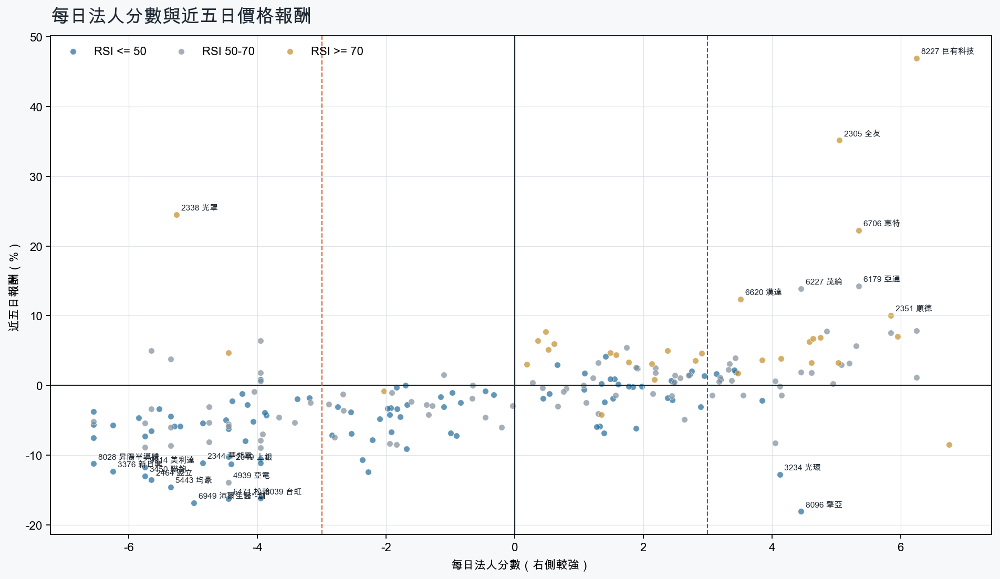
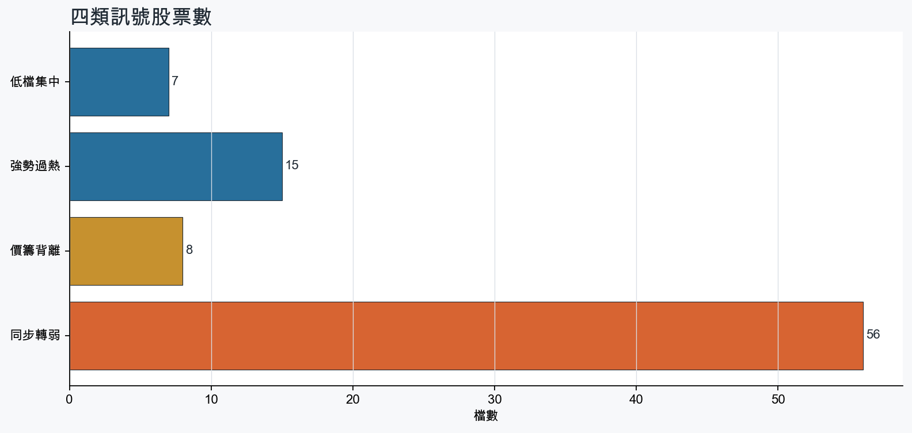
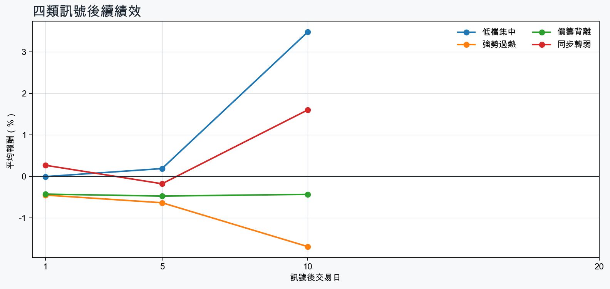

市場情緒偏空
近5日法人合計-3,213,204 張
篩選池上漲比例38.4%
籌碼好 / RSI低7 檔
籌碼差 / 價跌15 檔



EPS × PE VALUATION
法人常用的相對估值
顯示保守、基準與樂觀估值帶，不把單一數字包裝成精準目標價。
最新累計 EPS 依季數年化 × 同產業有效 P/E 的 Q25／中位數／Q75。排除本公司、非正 P/E，並以 1.5×IQR 排除離群值。估值帶是公開資料篩選值，不是法人目標價；未使用分析師預估 EPS。
MOOD × MONEY
情緒與籌碼雷達
熱度代表被討論程度；情緒分與法人方向分開計算。熱門不等於適合追價，樣本不足也不硬判多空。
| 股票 | 情緒 | 討論熱度 | 情緒 × 籌碼 | 情緒 × 基本面 |
|---|---|---|---|---|
| 6669 緯穎同步轉弱 | 中性分歧 +0.0信心 97 | 1002 篇 / 113 留言 / 3 則新聞 | 高熱分歧法人分 -5.8 | 基本面與情緒分歧基本面分 +3.0 |
| 3037 欣興低檔集中 | 中性分歧 -7.4信心 83 | 941 篇 / 84 留言 / 3 則新聞 | 高熱分歧法人分 +3.4 | 基本面與情緒分歧基本面分 +3.6 |
| 8358 金居價籌背離 | 情緒低迷 -40.9信心 98 | 882 篇 / 54 留言 / 3 則新聞 | 情籌雙弱法人分 -4.0 | 基本面佳、情緒悲觀基本面分 +3.6 |
| 2049 上銀同步轉弱 | 中性分歧 -9.4信心 79 | 852 篇 / 49 留言 / 1 則新聞 | 高熱分歧法人分 -4.4 | 基本面與情緒分歧基本面分 +3.6 |
| 2834 臺企銀強勢過熱 | 偏多 +34.8信心 67 | 821 篇 / 39 留言 / 3 則新聞 | 情籌共振法人分 +4.6 | 基本面與情緒共振基本面分 +1.6 |
| 2305 全友強勢過熱 | 偏多 +30.6信心 65 | 771 篇 / 28 留言 / 3 則新聞 | 情籌共振法人分 +5.0 | 基本面與情緒共振基本面分 +3.6 |
| 2892 第一金強勢過熱 | 情緒高漲 +55.6信心 56 | 661 篇 / 9 留言 / 3 則新聞 | 情籌共振法人分 +4.8 | 基本面與情緒共振基本面分 +2.8 |
| 3376 新日興同步轉弱 | 偏空 -29.7信心 30 | 470 篇 / 0 留言 / 3 則新聞 | 情籌雙弱法人分 -6.2 | 基本面與情緒雙弱基本面分 -1.8 |
| 2464 盟立同步轉弱 | 偏多 +29.7信心 30 | 470 篇 / 0 留言 / 3 則新聞 | 熱門但法人撤退法人分 -5.7 | 基本面與情緒共振基本面分 +3.0 |
| 3450 聯鈞同步轉弱 | 中性分歧 +0.0信心 30 | 470 篇 / 0 留言 / 3 則新聞 | 情籌混合法人分 -5.8 | 基本面與情緒分歧基本面分 +3.6 |
| 9914 美利達同步轉弱 | 偏多 +29.7信心 30 | 470 篇 / 0 留言 / 3 則新聞 | 熱門但法人撤退法人分 -5.8 | 基本面與情緒分歧基本面分 -0.6 |
| 8112 至上同步轉弱 | 中性分歧 +0.0信心 30 | 470 篇 / 0 留言 / 3 則新聞 | 情籌混合法人分 -6.5 | 基本面與情緒分歧基本面分 +3.0 |
01
籌碼好 / RSI低
優先研究基本面；法人續買且價格止穩時，才適合分批觀察。
| 股票 / 確認狀態 | 每日法人分 | 浦男式近似 | 法人加速度 | RSI / 相對強弱 | 量價確認 | 融資融券 | 每週集保確認 | 基本面 | EPS × 同業 P/E 估值 | 情緒 / 情籌 | 近期消息 | 論壇討論 |
|---|---|---|---|---|---|---|---|---|---|---|---|---|
| 3234 光環等待確認 · 89 分先等基本面止穩 | +4.1法人 +1,108 張 / 3 天 | 接近 · 70中期均線偏多；法人籌碼偏多；法人買盤加速；留意未站月線、量能尚未確認 | +2,175 張近3日 +1,015 / 連續 +2 日 | 49.3相對大盤 +20.6% | 量比 0.78確認分 +3.8收盤跌破20日線 | -%融資 +0 張 / 融券 +0 張 | +1.62 pp1000張 +5.12 pp | 單月營收年增 +110.1%；累計營收年增 +26.9%2026 Q2 累計 EPS -0.48；2026 Q2 累計營益率 -15.0%來源：公開資訊觀測站 | 不適用年化 EPS 非正數，不適合使用本益比估值 | 樣本不足 +9.9熱度 28 / 信心 10情緒樣本不足 | 光環傳拿下 InP 後段製程訂單 間接打入美光通訊鏈經濟日報 · 08/24 | 近期沒有明確提及本股的論壇樣本 |
| 2379 瑞昱等待確認 · 77 分籌碼有訊號，但價格尚未確認 | +3.9法人 +2,581 張 / 4 天 | 接近 · 69法人籌碼偏多；法人買盤加速；買超具延續性；留意未站月線、中期均線未翻多 | +1,610 張近3日 +2,089 / 連續 +4 日 | 45.1相對大盤 -0.6% | 量比 1.10確認分 +0.9收盤跌破20日線；20日線低於60日線 | -%融資 - 張 / 融券 - 張 | -0.54 pp1000張 -0.21 pp | 單月營收年增 +28.1%；累計營收年增 +15.0%；2026 Q2 累計 EPS 15.86仍需觀察下一期財報延續性來源：公開資訊觀測站 | 基準 NT$ 817.7估值帶 544.6–1,430現價 713.0 · 估值帶內 · 距基準 +14.7%2026 Q2 累計 EPS 15.86 → 年化 31.72半導體同業 P/E 17.17／25.78／45.09 · n=148 · 信心中等以 Q2 累計 EPS 年化，不等同分析師全年預估來源：TWSE／TPEx 每日本益比 | 樣本不足 +0.0熱度 0 / 信心 0情緒樣本不足 | 近期沒有通過股票語境篩選的新聞 | 近期沒有明確提及本股的論壇樣本 |
| 2515 中工等待確認 · 80 分籌碼有訊號，但價格尚未確認 | +3.2法人 +5,018 張 / 5 天 | 接近 · 75站上月線；法人籌碼偏多；法人買盤加速；留意中期均線未翻多、量能異常 | +5,053 張近3日 +3,425 / 連續 +5 日 | 50.0相對大盤 +1.2% | 量比 0.52確認分 +2.020日線低於60日線；成交量不足 | -%融資 - 張 / 融券 - 張 | -0.48 pp1000張 -0.86 pp | 單月營收年增 +28.8%；累計營收年增 +25.7%；2026 Q2 累計 EPS 0.252026 Q2 累計營益率 4.4%來源：公開資訊觀測站 | 基準 NT$ 4.78估值帶 3.35–6.49現價 12.00 · 高於估值帶 · 距基準 -60.2%2026 Q2 累計 EPS 0.25 → 年化 0.50建材營造同業 P/E 6.69／9.55／12.98 · n=62 · 信心中等以 Q2 累計 EPS 年化，不等同分析師全年預估來源：TWSE／TPEx 每日本益比 | 樣本不足 +0.0熱度 0 / 信心 0情緒樣本不足 | 近期沒有通過股票語境篩選的新聞 | 近期沒有明確提及本股的論壇樣本 |
| 3702 大聯大等待確認 · 71 分籌碼有訊號，但價格尚未確認 | +3.4法人 +6,533 張 / 5 天 | 接近 · 61站上月線；法人籌碼偏多；法人買盤加速；留意中期均線未翻多、明顯弱於大盤 | +4,318 張近3日 +5,648 / 連續 +7 日 | 43.1相對大盤 -3.6% | 量比 0.55確認分 +0.820日線低於60日線；近20日弱於大盤；成交量不足 | -%融資 - 張 / 融券 - 張 | -2.20 pp1000張 -2.44 pp | 單月營收年增 +80.5%；累計營收年增 +62.4%；2026 Q2 累計 EPS 8.422026 Q2 累計營益率 2.6%來源：公開資訊觀測站 | 基準 NT$ 206.5估值帶 166.2–380.4現價 107.0 · 低於估值帶 · 距基準 +93.0%2026 Q2 累計 EPS 8.42 → 年化 16.84電子通路同業 P/E 9.87／12.26／22.59 · n=31 · 信心中等以 Q2 累計 EPS 年化，不等同分析師全年預估來源：TWSE／TPEx 每日本益比 | 偏多 +19.8熱度 40 / 信心 20情籌混合 | IC通路雙雄大聯大、文曄 前八月營收雙雙突破兆元UDN · 09/10個股：大聯大(3702)受邀參加瑞銀證券於9/15舉辦之UBS Taiwan Summit 2026富聯網 · 09/14 | 近期沒有明確提及本股的論壇樣本 |
| 3037 欣興等待確認 · 52 分籌碼有訊號，但價格尚未確認 | +3.4法人 +6,408 張 / 4 天 | 未命中 · 54中期均線偏多；法人籌碼偏多；買超具延續性；留意未站月線、法人買盤未加速 | -6,207 張近3日 +1,144 / 連續 +2 日 | 37.1相對大盤 -13.4% | 量比 0.54確認分 -4.8收盤跌破20日線；近20日弱於大盤；成交量不足；法人買盤減速 | -%融資 - 張 / 融券 - 張 | +2.26 pp1000張 +1.75 pp | 單月營收年增 +56.3%；累計營收年增 +34.2%；2026 Q2 累計 EPS 11.70仍需觀察下一期財報延續性來源：公開資訊觀測站 | 基準 NT$ 593.4估值帶 412.3–976.2現價 970.0 · 估值帶內 · 距基準 -38.8%2026 Q2 累計 EPS 11.70 → 年化 23.40電子零組件同業 P/E 17.62／25.36／41.72 · n=150 · 信心中等以 Q2 累計 EPS 年化，不等同分析師全年預估來源：TWSE／TPEx 每日本益比 | 中性分歧 -7.4熱度 94 / 信心 83高熱分歧 | 3037 欣興 - 要翻紅了嗎？ - 股市爆料同學會CMoney · 09/14欣興(3037)營收連6高，卻跌停失守千元大關，「被錯殺」還是「估值修正」？優分析UAnalyze · 09/14 | [新聞] PCB女王喊逢跌就買！ 不只欣興、南電、PTT Stock · 09-11 · 84 留言 |
| 5904 寶雅*等待確認 · 61 分籌碼有訊號，但價格尚未確認 | +3.1法人 +3,429 張 / 4 天 | 接近 · 61中期均線偏多；法人籌碼偏多；法人買盤加速；留意未站月線、明顯弱於大盤 | +304 張近3日 +1,799 / 連續 +2 日 | 41.7相對大盤 -4.7% | 量比 0.47確認分 -1.1收盤跌破20日線；近20日弱於大盤；成交量不足 | -2.8%融資 -179 張 / 融券 -1 張 | -3.16 pp1000張 -2.78 pp | 單月營收年增 +10.3%；累計營收年增 +13.9%；2026 Q2 累計 EPS 17.45仍需觀察下一期財報延續性來源：公開資訊觀測站 | 不適用年化 EPS 與交易所近四季 EPS 差異過大，可能有股本調整或一次性損益 | 樣本不足 +0.0熱度 0 / 信心 0情緒樣本不足 | 近期沒有通過股票語境篩選的新聞 | 近期沒有明確提及本股的論壇樣本 |
| 8096 擎亞等待確認 · 64 分籌碼有訊號，但價格尚未確認 | +4.5法人 +3,153 張 / 3 天 | 未命中 · 55法人籌碼偏多；法人買盤加速；買超具延續性；留意未站月線、中期均線未翻多 | +2,503 張近3日 +2,956 / 連續 +1 日 | 17.9相對大盤 -24.6% | 量比 2.37確認分 -1.0收盤跌破20日線；20日線低於60日線；近20日弱於大盤 | -0.6%融資 -133 張 / 融券 -20 張 | -4.33 pp1000張 -2.88 pp | 單月營收年增 +269.6%；累計營收年增 +80.7%；2026 Q2 累計 EPS 3.312026 Q2 累計營益率 2.2%來源：公開資訊觀測站 | 基準 NT$ 77.98估值帶 65.21–137.6現價 86.00 · 估值帶內 · 距基準 -9.3%2026 Q2 累計 EPS 3.31 → 年化 6.62電子通路同業 P/E 9.85／11.78／20.79 · n=31 · 信心中等以 Q2 累計 EPS 年化，不等同分析師全年預估來源：TWSE／TPEx 每日本益比 | 樣本不足 +0.0熱度 0 / 信心 0情緒樣本不足 | 近期沒有通過股票語境篩選的新聞 | 近期沒有明確提及本股的論壇樣本 |
02
籌碼好 / RSI高
趨勢強但不追價，等待量縮、RSI降溫或回測支撐。
| 股票 / 確認狀態 | 每日法人分 | 浦男式近似 | 法人加速度 | RSI / 相對強弱 | 量價確認 | 融資融券 | 每週集保確認 | 基本面 | EPS × 同業 P/E 估值 | 情緒 / 情籌 | 近期消息 | 論壇討論 |
|---|---|---|---|---|---|---|---|---|---|---|---|---|
| 3374 精材等待拉回 · 100 分等拉回，不追價 | +6.8法人 +3,469 張 / 5 天 | 命中 · 96站上月線；中期均線偏多；法人籌碼偏多；留意動能位置非最佳 | +1,315 張近3日 +2,858 / 連續 +10 日 | 71.1相對大盤 +46.8% | 量比 1.23確認分 +7.1價格、量能與籌碼未見明顯弱項 | -3.2%融資 -978 張 / 融券 -40 張 | +8.03 pp1000張 +7.29 pp | 單月營收年增 +36.7%；累計營收年增 +33.2%；2026 Q2 累計 EPS 2.88仍需觀察下一期財報延續性來源：公開資訊觀測站 | 基準 NT$ 147.3估值帶 98.90–256.2現價 429.5 · 高於估值帶 · 距基準 -65.7%2026 Q2 累計 EPS 2.88 → 年化 5.76半導體同業 P/E 17.17／25.58／44.48 · n=148 · 信心中等以 Q2 累計 EPS 年化，不等同分析師全年預估來源：TWSE／TPEx 每日本益比 | 偏多 +29.7熱度 47 / 信心 30情籌共振 | 台灣精材（3467）做什麼？半年 EPS 超越去年，業務技術解析pocket.tw · 09/14驊宏資、華經、台灣精材再飆漲停！數位雲端股中華資安、安碁資訊齊亮燈力新、光鼎攻頂鎖不住Yahoo股市 · 09/14 | 近期沒有明確提及本股的論壇樣本 |
| 2351 順德等待拉回 · 100 分等拉回，不追價 | +5.8法人 +2,016 張 / 4 天 | 命中 · 96站上月線；中期均線偏多；法人籌碼偏多；留意動能位置非最佳 | +696 張近3日 +820 / 連續 +2 日 | 72.4相對大盤 +51.2% | 量比 1.96確認分 +6.5價格、量能與籌碼未見明顯弱項 | -%融資 - 張 / 融券 - 張 | +5.49 pp1000張 +6.65 pp | 單月營收年增 +61.2%；累計營收年增 +32.5%；2026 Q2 累計 EPS 2.82仍需觀察下一期財報延續性來源：公開資訊觀測站 | 基準 NT$ 144.3估值帶 96.84–250.9現價 257.0 · 高於估值帶 · 距基準 -43.9%2026 Q2 累計 EPS 2.82 → 年化 5.64半導體同業 P/E 17.17／25.58／44.48 · n=148 · 信心中等以 Q2 累計 EPS 年化，不等同分析師全年預估來源：TWSE／TPEx 每日本益比 | 偏多 +29.7熱度 47 / 信心 30情籌共振 | 【09/14 產業即時新聞】IC導線架族群強勢表態，順德亮燈漲停引爆車用與功率元件買氣CMoney投資網誌 · 09/14順德(2351)、營邦(3693)外資持股創高優勢怎麼看？｜大戶投策略選股｜外資持股創三年新高｜豐雲學堂2026 年 09 月sinotrade.com.tw · 09/14 | 近期沒有明確提及本股的論壇樣本 |
| 8227 巨有科技等待拉回 · 100 分等拉回，不追價 | +6.2法人 +3,045 張 / 5 天 | 接近 · 80站上月線；中期均線偏多；法人籌碼偏多；留意量能異常、RSI過熱 | +2,257 張近3日 +2,656 / 連續 +6 日 | 82.5相對大盤 +56.0% | 量比 7.62確認分 +5.3價格、量能與籌碼未見明顯弱項 | +2.6%融資 +86 張 / 融券 +171 張 | +6.46 pp1000張 +3.67 pp | 單月營收年增 +42.2%；累計營收年增 +73.2%；2026 Q2 累計 EPS 3.232026 Q2 累計營益率 7.3%來源：公開資訊觀測站 | 基準 NT$ 165.2估值帶 110.9–287.3現價 241.0 · 估值帶內 · 距基準 -31.4%2026 Q2 累計 EPS 3.23 → 年化 6.46半導體同業 P/E 17.17／25.58／44.48 · n=148 · 信心中等以 Q2 累計 EPS 年化，不等同分析師全年預估來源：TWSE／TPEx 每日本益比 | 偏多 +29.7熱度 47 / 信心 30情籌共振 | 巨有科技(8227)是什麼公司？ASIC設計老將的核心技術與財報全解析pocket.tw · 09/14【10:45 即時新聞】巨有科技(8227)股價上漲5.65%、報價252.5，AI／ASIC營收成長題材延續＋主力與法人同步偏多結構支撐CMoney · 09/14 | 近期沒有明確提及本股的論壇樣本 |
| 2455 全新等待拉回 · 96 分等拉回，不追價 | +6.0法人 +3,896 張 / 5 天 | 接近 · 79站上月線；中期均線偏多；法人籌碼偏多；留意法人買盤未加速、量能異常 | -1,926 張近3日 +1,331 / 連續 +9 日 | 73.9相對大盤 +28.3% | 量比 0.14確認分 +1.1成交量不足；法人買盤減速 | -%融資 - 張 / 融券 - 張 | +5.69 pp1000張 +3.25 pp | 單月營收年增 +71.2%；累計營收年增 +35.9%；2026 Q2 累計 EPS 2.20仍需觀察下一期財報延續性來源：公開資訊觀測站 | 基準 NT$ 92.75估值帶 64.02–151.5現價 535.0 · 高於估值帶 · 距基準 -82.7%2026 Q2 累計 EPS 2.20 → 年化 4.40通信網路同業 P/E 14.55／21.08／34.43 · n=58 · 信心中等以 Q2 累計 EPS 年化，不等同分析師全年預估來源：TWSE／TPEx 每日本益比 | 偏多 +29.7熱度 47 / 信心 30情籌共振 | 2455 全新 - 9/14 2615 +1156 - 股市爆料同學會CMoney · 09/14LF-1 limitless Concept 量產再現？豐田集團全新後驅平台讓 Lexus 新增後驅 SUV 機會大增！kuruma-x · 09/14 | 近期沒有明確提及本股的論壇樣本 |
| 2820 華票等待拉回 · 100 分等拉回，不追價 | +5.0法人 +9,317 張 / 5 天 | 接近 · 86站上月線；法人籌碼偏多；法人買盤加速；留意中期均線未翻多、動能位置非最佳 | +5,365 張近3日 +7,201 / 連續 +5 日 | 74.4相對大盤 +7.1% | 量比 1.20確認分 +6.320日線低於60日線 | -%融資 - 張 / 融券 - 張 | +0.01 pp1000張 -0.18 pp | 單月營收年增 +54.7%；累計營收年增 +46.7%；2026 Q2 累計 EPS 1.07仍需觀察下一期財報延續性來源：公開資訊觀測站 | 基準 NT$ 29.04估值帶 15.41–34.73現價 17.40 · 估值帶內 · 距基準 +66.9%2026 Q2 累計 EPS 1.07 → 年化 2.14金融保險同業 P/E 7.20／13.57／16.23 · n=39 · 信心中等以 Q2 累計 EPS 年化，不等同分析師全年預估來源：TWSE／TPEx 每日本益比 | 樣本不足 +0.0熱度 0 / 信心 0情緒樣本不足 | 近期沒有通過股票語境篩選的新聞 | 近期沒有明確提及本股的論壇樣本 |
| 2305 全友等待拉回 · 100 分等拉回，不追價 | +5.0法人 +2,100 張 / 4 天 | 接近 · 75站上月線；法人籌碼偏多；法人買盤加速；留意中期均線未翻多、量能尚未確認 | +4,001 張近3日 +3,412 / 連續 +4 日 | 87.9相對大盤 +58.1% | 量比 2.92確認分 +5.820日線低於60日線 | -%融資 - 張 / 融券 - 張 | +1.32 pp1000張 +1.24 pp | 單月營收年增 +240.0%；累計營收年增 +113.2%；2026 Q2 累計 EPS 0.51仍需觀察下一期財報延續性來源：公開資訊觀測站 | 基準 NT$ 15.79估值帶 12.56–22.56現價 45.15 · 高於估值帶 · 距基準 -65.0%2026 Q2 累計 EPS 0.51 → 年化 1.02電腦及週邊同業 P/E 12.31／15.48／22.12 · n=78 · 信心中等以 Q2 累計 EPS 年化，不等同分析師全年預估來源：TWSE／TPEx 每日本益比 | 偏多 +30.6熱度 77 / 信心 65情籌共振 | 今日漲停股｜資安示警發酵、AI伺服器供電與功率半導體齊發！全友、順德、匯鑽科同步鎖住漲停 0914sinotrade.com.tw · 09/149/14台股交易回顧｜全友(2305)漲勢驚人-林恩如CMoney投資網誌 · 09/14 | [標的] 掌握全友 我全都有PTT Stock · 09-12 · 28 留言 |
| 2412 中華電等待拉回 · 100 分等拉回，不追價 | +4.6法人 +36,018 張 / 5 天 | 接近 · 80站上月線；法人籌碼偏多；法人買盤加速；留意中期均線未翻多、RSI過熱 | +13,914 張近3日 +25,515 / 連續 +10 日 | 83.3相對大盤 +4.8% | 量比 1.97確認分 +5.720日線低於60日線 | -%融資 - 張 / 融券 - 張 | +0.11 pp1000張 +0.20 pp | 單月營收年增 +25.6%；累計營收年增 +9.5%；2026 Q2 累計 EPS 2.68仍需觀察下一期財報延續性來源：公開資訊觀測站 | 基準 NT$ 113.0估值帶 77.99–198.1現價 142.5 · 估值帶內 · 距基準 -20.7%2026 Q2 累計 EPS 2.68 → 年化 5.36通信網路同業 P/E 14.55／21.08／36.95 · n=58 · 信心中等以 Q2 累計 EPS 年化，不等同分析師全年預估來源：TWSE／TPEx 每日本益比 | 樣本不足 +0.0熱度 28 / 信心 10情緒樣本不足 | 2412 中華電 - 續漲 ，棒棒棒！ - 股市爆料同學會CMoney · 09/14 | 近期沒有明確提及本股的論壇樣本 |
| 2892 第一金等待拉回 · 100 分等拉回，不追價 | +4.8法人 +71,846 張 / 5 天 | 接近 · 90站上月線；中期均線偏多；法人籌碼偏多；留意RSI過熱 | +25,906 張近3日 +51,389 / 連續 +10 日 | 92.9相對大盤 +19.3% | 量比 1.02確認分 +6.5價格、量能與籌碼未見明顯弱項 | -%融資 - 張 / 融券 - 張 | +0.46 pp1000張 +0.42 pp | 單月營收年增 +13.9%；累計營收年增 +18.0%；2026 Q2 累計 EPS 1.24仍需觀察下一期財報延續性來源：公開資訊觀測站 | 基準 NT$ 33.46估值帶 17.86–40.08現價 39.85 · 估值帶內 · 距基準 -16.1%2026 Q2 累計 EPS 1.24 → 年化 2.48金融保險同業 P/E 7.20／13.49／16.16 · n=39 · 信心中等以 Q2 累計 EPS 年化，不等同分析師全年預估來源：TWSE／TPEx 每日本益比 | 情緒高漲 +55.6熱度 66 / 信心 56情籌共振 | 2312 金寶 - 金寶9月15日受邀第一金證券法說會- 股市爆料同學會CMoney · 09/14第一金獲利／前八月238億元續創新高 EPS 1.66元經濟日報 · 09/11 | [情報] 2892 第一金 8月自結 0.20 累計 1.66PTT Stock · 09-11 · 9 留言 |
| 2889 國票金等待拉回 · 97 分等拉回，不追價 | +3.9法人 +22,751 張 / 4 天 | 命中 · 96站上月線；中期均線偏多；法人籌碼偏多；留意動能位置非最佳 | +2,576 張近3日 +12,116 / 連續 +2 日 | 75.6相對大盤 +9.9% | 量比 1.01確認分 +5.4價格、量能與籌碼未見明顯弱項 | -%融資 - 張 / 融券 - 張 | -1.01 pp1000張 -1.11 pp | 單月營收年增 +51.9%；累計營收年增 +94.9%；2026 Q2 累計 EPS 0.77仍需觀察下一期財報延續性來源：公開資訊觀測站 | 基準 NT$ 20.77估值帶 11.09–24.99現價 17.05 · 估值帶內 · 距基準 +21.9%2026 Q2 累計 EPS 0.77 → 年化 1.54金融保險同業 P/E 7.20／13.49／16.23 · n=39 · 信心中等以 Q2 累計 EPS 年化，不等同分析師全年預估來源：TWSE／TPEx 每日本益比 | 樣本不足 +0.0熱度 28 / 信心 10情緒樣本不足 | 存股變存骨？彰銀、國票金合併震撼彈股票換完「張數大失血」資產集體縮水？不看這篇恐盲目砍在阿呆谷- 上市櫃旺得富理財網 · 08/29 | 近期沒有明確提及本股的論壇樣本 |
| 2855 統一證等待拉回 · 100 分等拉回，不追價 | +3.5法人 +6,091 張 / 5 天 | 接近 · 90站上月線；中期均線偏多；法人籌碼偏多；留意RSI過熱 | +1,607 張近3日 +4,817 / 連續 +6 日 | 89.4相對大盤 +13.5% | 量比 1.49確認分 +5.8價格、量能與籌碼未見明顯弱項 | -%融資 - 張 / 融券 - 張 | +0.92 pp1000張 +0.97 pp | 單月營收年增 +109.9%；累計營收年增 +217.4%；2026 Q2 累計 EPS 6.96仍需觀察下一期財報延續性來源：公開資訊觀測站 | 基準 NT$ 188.9估值帶 118.3–225.9現價 52.90 · 低於估值帶 · 距基準 +257.1%2026 Q2 累計 EPS 6.96 → 年化 13.92金融保險同業 P/E 8.50／13.57／16.23 · n=39 · 信心中等以 Q2 累計 EPS 年化，不等同分析師全年預估來源：TWSE／TPEx 每日本益比 | 樣本不足 +0.0熱度 28 / 信心 10情緒樣本不足 | 《動休閒》鈺齊-KY 9月17日參加統一證法說會富聯網 · 09/14 | 近期沒有明確提及本股的論壇樣本 |
| 3045 台灣大等待拉回 · 88 分等拉回，不追價 | +4.1法人 +12,901 張 / 5 天 | 接近 · 73站上月線；中期均線偏多；法人籌碼偏多；留意法人買盤未加速、量能異常 | -1,358 張近3日 +5,981 / 連續 +10 日 | 83.3相對大盤 +9.4% | 量比 0.49確認分 +2.7成交量不足；法人買盤減速 | -%融資 - 張 / 融券 - 張 | +0.89 pp1000張 +0.75 pp | 單月營收年增 +8.5%；累計營收年增 +4.7%；2026 Q2 累計 EPS 2.86仍需觀察下一期財報延續性來源：公開資訊觀測站 | 基準 NT$ 120.6估值帶 83.23–211.3現價 121.5 · 估值帶內 · 距基準 -0.8%2026 Q2 累計 EPS 2.86 → 年化 5.72通信網路同業 P/E 14.55／21.08／36.95 · n=58 · 信心中等以 Q2 累計 EPS 年化，不等同分析師全年預估來源：TWSE／TPEx 每日本益比 | 偏多 +29.7熱度 47 / 信心 30情籌共振 | 台灣大前8月獲利年增22%，累計EPS 3.78元MoneyDJ · 09/113045 台灣大- 外資連買- 股市爆料同學會CMoney · 09/13 | 近期沒有明確提及本股的論壇樣本 |
| 5876 上海商銀等待拉回 · 85 分等拉回，不追價 | +4.6法人 +22,487 張 / 5 天 | 接近 · 79站上月線；中期均線偏多；法人籌碼偏多；留意法人買盤未加速、RSI過熱 | -8,235 張近3日 +10,092 / 連續 +10 日 | 79.1相對大盤 +18.1% | 量比 1.03確認分 +2.5法人買盤減速 | -%融資 - 張 / 融券 - 張 | +0.53 pp1000張 +0.66 pp | 單月營收年增 +7.1%；累計營收年增 +2.0%；2026 Q2 累計 EPS 2.08仍需觀察下一期財報延續性來源：公開資訊觀測站 | 基準 NT$ 56.12估值帶 29.95–67.52現價 49.90 · 估值帶內 · 距基準 +12.5%2026 Q2 累計 EPS 2.08 → 年化 4.16金融保險同業 P/E 7.20／13.49／16.23 · n=39 · 信心中等以 Q2 累計 EPS 年化，不等同分析師全年預估來源：TWSE／TPEx 每日本益比 | 樣本不足 +0.0熱度 0 / 信心 0情緒樣本不足 | 近期沒有通過股票語境篩選的新聞 | 近期沒有明確提及本股的論壇樣本 |
| 2834 臺企銀等待拉回 · 87 分等拉回，不追價 | +4.6法人 +69,989 張 / 5 天 | 接近 · 79站上月線；中期均線偏多；法人籌碼偏多；留意法人買盤未加速、RSI過熱 | -12,410 張近3日 +29,932 / 連續 +6 日 | 85.7相對大盤 +12.6% | 量比 0.93確認分 +3.0法人買盤減速 | -%融資 - 張 / 融券 - 張 | -0.22 pp1000張 -0.31 pp | 單月營收年增 +8.8%；累計營收年增 +6.5%；2026 Q2 累計 EPS 0.71仍需觀察下一期財報延續性來源：公開資訊觀測站 | 基準 NT$ 19.27估值帶 10.22–23.05現價 18.35 · 估值帶內 · 距基準 +5.0%2026 Q2 累計 EPS 0.71 → 年化 1.42金融保險同業 P/E 7.20／13.57／16.23 · n=39 · 信心中等以 Q2 累計 EPS 年化，不等同分析師全年預估來源：TWSE／TPEx 每日本益比 | 偏多 +34.8熱度 82 / 信心 67情籌共振 | 臺企銀前八月獲利續創同期高，利息收入仍是主力- 新聞MoneyDJ · 09/14《金融股》臺企銀主辦公股聯合供應商大會助企業永續經營- 上市櫃旺得富理財網 · 09/11 | [情報] 2834臺企銀115年8月份自結:0.13PTT Stock · 09-10 · 39 留言 |
| 6620 漢達等待拉回 · 74 分等拉回，不追價 | +3.5法人 +1,061 張 / 3 天 | 接近 · 65站上月線；中期均線偏多；法人籌碼偏多；留意法人買盤未加速、量能異常 | -2,160 張近3日 -26 / 連續 +1 日 | 82.5相對大盤 +64.5% | 量比 0.63確認分 +1.1成交量不足；法人買盤減速 | +1.8%融資 +131 張 / 融券 -30 張 | +3.23 pp1000張 +1.27 pp | 2026 Q2 累計 EPS 0.65；2026 Q2 累計營益率 25.4%單月營收年增 -79.9%；累計營收年增 -58.2%來源：公開資訊觀測站 | 基準 NT$ 18.62估值帶 15.42–23.54現價 127.0 · 高於估值帶 · 距基準 -85.3%2026 Q2 累計 EPS 0.65 → 年化 1.30生技醫療同業 P/E 11.86／14.32／18.11 · n=84 · 信心較低以 Q2 累計 EPS 年化，不等同分析師全年預估；年化 EPS 為交易所近四季 EPS 的 0.45 倍，需保守解讀來源：TWSE／TPEx 每日本益比 | 樣本不足 +0.0熱度 0 / 信心 0情緒樣本不足 | 近期沒有通過股票語境篩選的新聞 | 近期沒有明確提及本股的論壇樣本 |
| 6706 惠特等待拉回 · 91 分等拉回，不追價 | +5.3法人 +1,531 張 / 4 天 | 接近 · 61站上月線；法人籌碼偏多；法人買盤加速；留意中期均線未翻多、量能異常 | +1,817 張近3日 +1,522 / 連續 +3 日 | 77.5相對大盤 +22.3% | 量比 8.10確認分 +5.320日線低於60日線 | -%融資 - 張 / 融券 - 張 | -1.44 pp1000張 +0.02 pp | 單月營收年增 +120.5%累計營收年增 -35.0%；2026 Q2 累計 EPS -2.85；2026 Q2 累計營益率 -85.0%來源：公開資訊觀測站 | 不適用年化 EPS 非正數，不適合使用本益比估值 | 偏空 -29.7熱度 47 / 信心 30法人布局、市場悲觀 | 光電股漲跌互見！「光學雙雄」遭外資連續砍評齊挫跌停、天瀚漲勢煞車亮綠燈惠特、光鼎雙雙帶量攻頂FTNN 新聞網 · 09/14惠特8月營收7762萬元年增逾1倍 部分驗證產品已逐步出貨news.cnyes.com · 09/10 | 近期沒有明確提及本股的論壇樣本 |
03
籌碼差 / 股價上漲
可能是事件行情或軋空；沒有籌碼改善前避免追高。
| 股票 / 確認狀態 | 每日法人分 | 浦男式近似 | 法人加速度 | RSI / 相對強弱 | 量價確認 | 融資融券 | 每週集保確認 | 基本面 | EPS × 同業 P/E 估值 | 情緒 / 情籌 | 近期消息 | 論壇討論 |
|---|---|---|---|---|---|---|---|---|---|---|---|---|
| 2338 光罩風險警示 · 36 分背離警戒，避免追高 | -5.3法人 -2,762 張 / 0 天 | 未命中 · 37站上月線；明顯強於大盤；流動性足夠；留意中期均線未翻多、法人籌碼偏弱 | -2,294 張近3日 -2,609 / 連續 -9 日 | 78.9相對大盤 +21.8% | 量比 7.07確認分 +1.420日線低於60日線；法人買盤減速 | -%融資 - 張 / 融券 - 張 | +0.12 pp1000張 +0.03 pp | 2026 Q2 累計 EPS 0.61單月營收年增 -8.9%；累計營收年增 -4.5%；2026 Q2 累計營益率 0.1%來源：公開資訊觀測站 | 基準 NT$ 31.54估值帶 20.98–54.99現價 48.00 · 估值帶內 · 距基準 -34.3%2026 Q2 累計 EPS 0.61 → 年化 1.22半導體同業 P/E 17.20／25.85／45.07 · n=149 · 信心較低以 Q2 累計 EPS 年化，不等同分析師全年預估；交易所無有效本益比，無法交叉檢核近四季 EPS來源：TWSE／TPEx 每日本益比 | 偏多 +29.7熱度 47 / 信心 30熱門但法人撤退 | 半導體光罩夯！這「關鍵載具廠」搶進先進封裝領域 2027迎獲利爆發年Yahoo股市 · 09/13【10:18 即時新聞】光罩(2338)股價走強至50.8元，上漲6.39%，資金迴流半導體製造題材＋短線脫離低檔區、主力近一日高檔調節後買盤追價CMoney投資網誌 · 09/14 | 近期沒有明確提及本股的論壇樣本 |
| 3605 宏致風險警示 · 41 分背離警戒，避免追高 | -5.7法人 -3,859 張 / 1 天 | 未命中 · 57站上月線；中期均線偏多；法人買盤加速；留意法人籌碼偏弱、買超延續不足 | +2,328 張近3日 -1,669 / 連續 +1 日 | 55.9相對大盤 -3.8% | 量比 0.63確認分 +2.2近20日弱於大盤；成交量不足 | -%融資 - 張 / 融券 - 張 | -3.14 pp1000張 -2.05 pp | 單月營收年增 +17.2%；累計營收年增 +17.2%；2026 Q2 累計 EPS 1.892026 Q2 累計營益率 6.4%來源：公開資訊觀測站 | 基準 NT$ 95.86估值帶 66.60–166.5現價 126.5 · 估值帶內 · 距基準 -24.2%2026 Q2 累計 EPS 1.89 → 年化 3.78電子零組件同業 P/E 17.62／25.36／44.04 · n=150 · 信心中等以 Q2 累計 EPS 年化，不等同分析師全年預估來源：TWSE／TPEx 每日本益比 | 偏多 +19.8熱度 40 / 信心 20情籌混合 | 【13:02 即時新聞】宏致(3605)股價小幅走高至126.5元，AI高速連接器成長題材支撐、短線獲利回吐後多空拉鋸CMoney投資網誌 · 09/14宏致挑戰外商霸權 搶攻高速傳輸！十年磨一劍，打進AI伺服器供應鏈財訊 · 08/16 | 近期沒有明確提及本股的論壇樣本 |
| 2413 環科風險警示 · 68 分背離警戒，避免追高 | -4.5法人 -2,321 張 / 2 天 | 接近 · 78站上月線；中期均線偏多；法人買盤加速；留意法人籌碼偏弱、買超延續不足 | +832 張近3日 -1,490 / 連續 -1 日 | 71.0相對大盤 +13.1% | 量比 1.73確認分 +6.5價格、量能與籌碼未見明顯弱項 | -%融資 - 張 / 融券 - 張 | -1.64 pp1000張 -0.93 pp | 單月營收年增 +2.2%；累計營收年增 +13.9%；2026 Q2 累計 EPS 2.392026 Q2 累計營益率 3.4%來源：公開資訊觀測站 | 基準 NT$ 123.8估值帶 85.71–210.5現價 50.60 · 低於估值帶 · 距基準 +144.6%2026 Q2 累計 EPS 2.39 → 年化 4.78電子零組件同業 P/E 17.93／25.89／44.04 · n=150 · 信心中等以 Q2 累計 EPS 年化，不等同分析師全年預估來源：TWSE／TPEx 每日本益比 | 樣本不足 +0.0熱度 28 / 信心 10情緒樣本不足 | 8月營收連6月年增 法人看好環科明年EPS年增率有望達13%以上理財周刊 · 09/14 | 近期沒有明確提及本股的論壇樣本 |
| 5340 建榮風險警示 · 49 分背離警戒，避免追高 | -5.3法人 -2,024 張 / 1 天 | 接近 · 75站上月線；中期均線偏多；明顯強於大盤；留意法人籌碼偏弱、法人買盤未加速 | -2,861 張近3日 -2,249 / 連續 -4 日 | 65.0相對大盤 +6.0% | 量比 1.46確認分 +2.6法人買盤減速 | -2.2%融資 -117 張 / 融券 -28 張 | -0.42 pp1000張 -0.84 pp | 單月營收年增 +47.8%；累計營收年增 +27.8%；2026 Q2 累計 EPS 1.00仍需觀察下一期財報延續性來源：公開資訊觀測站 | 基準 NT$ 50.72估值帶 35.24–83.44現價 84.30 · 高於估值帶 · 距基準 -39.8%2026 Q2 累計 EPS 1.00 → 年化 2.00電子零組件同業 P/E 17.62／25.36／41.72 · n=150 · 信心中等以 Q2 累計 EPS 年化，不等同分析師全年預估來源：TWSE／TPEx 每日本益比 | 樣本不足 +0.0熱度 0 / 信心 0情緒樣本不足 | 近期沒有通過股票語境篩選的新聞 | 近期沒有明確提及本股的論壇樣本 |
| 3029 零壹風險警示 · 48 分背離警戒，避免追高 | -4.0法人 -2,492 張 / 2 天 | 接近 · 65站上月線；中期均線偏多；明顯強於大盤；留意法人籌碼偏弱、法人買盤未加速 | -3,390 張近3日 -3,055 / 連續 -2 日 | 64.3相對大盤 +6.4% | 量比 8.88確認分 +0.9法人買盤減速 | -%融資 - 張 / 融券 - 張 | +1.00 pp1000張 +0.73 pp | 單月營收年增 +44.4%；累計營收年增 +20.1%；2026 Q2 累計 EPS 3.632026 Q2 累計營益率 6.3%來源：公開資訊觀測站 | 基準 NT$ 102.0估值帶 85.67–128.2現價 116.5 · 估值帶內 · 距基準 -12.4%2026 Q2 累計 EPS 3.63 → 年化 7.26資訊服務同業 P/E 11.80／14.05／17.66 · n=35 · 信心中等以 Q2 累計 EPS 年化，不等同分析師全年預估來源：TWSE／TPEx 每日本益比 | 偏多 +29.7熱度 47 / 信心 30熱門但法人撤退 | 【優分析即時新聞】零壹(3029)8月營收創高，前8月年增20.13%、力拚全年300億元優分析UAnalyze · 09/14【09:41 即時新聞】零壹(3029)股價上攻至122.5元、上漲5.15%，受惠AI資安＋多頭技術結構延續主力偏多籌碼CMoney投資網誌 · 09/14 | 近期沒有明確提及本股的論壇樣本 |
| 3042 晶技風險警示 · 6 分背離警戒，避免追高 | -4.0法人 -3,507 張 / 2 天 | 未命中 · 26基本面有支撐；流動性足夠；留意未站月線、中期均線未翻多 | -5,047 張近3日 -3,428 / 連續 +1 日 | 43.8相對大盤 -9.0% | 量比 0.41確認分 -6.3收盤跌破20日線；20日線低於60日線；近20日弱於大盤；成交量不足；法人買盤減速 | -%融資 - 張 / 融券 - 張 | -3.32 pp1000張 -2.46 pp | 單月營收年增 +23.5%；累計營收年增 +11.7%；2026 Q2 累計 EPS 2.96仍需觀察下一期財報延續性來源：公開資訊觀測站 | 基準 NT$ 150.1估值帶 104.3–260.7現價 178.0 · 估值帶內 · 距基準 -15.7%2026 Q2 累計 EPS 2.96 → 年化 5.92電子零組件同業 P/E 17.62／25.36／44.04 · n=150 · 信心中等以 Q2 累計 EPS 年化，不等同分析師全年預估來源：TWSE／TPEx 每日本益比 | 中性分歧 +0.0熱度 40 / 信心 20情籌混合 | 晶技（3042）毛利率為何回升？不是靠漲價，AI、光通訊成關鍵！｜股市話題｜豐雲學堂2026 年 09 月sinotrade.com.tw · 08/26《投信賣超4-3》奇鋐(183)、台光電(183)、晶技(175)富聯網 · 09/14 | 近期沒有明確提及本股的論壇樣本 |
| 8358 金居風險警示 · 53 分背離警戒，避免追高 | -4.0法人 -2,607 張 / 2 天 | 接近 · 75站上月線；中期均線偏多；明顯強於大盤；留意法人籌碼偏弱、法人買盤未加速 | -4,728 張近3日 -3,641 / 連續 -3 日 | 64.0相對大盤 +23.5% | 量比 1.75確認分 +2.5法人買盤減速 | -0.5%融資 -135 張 / 融券 +400 張 | -2.76 pp1000張 +0.05 pp | 單月營收年增 +59.7%；累計營收年增 +46.8%；2026 Q2 累計 EPS 4.22仍需觀察下一期財報延續性來源：公開資訊觀測站 | 基準 NT$ 214.0估值帶 148.7–352.1現價 518.0 · 高於估值帶 · 距基準 -58.7%2026 Q2 累計 EPS 4.22 → 年化 8.44電子零組件同業 P/E 17.62／25.36／41.72 · n=150 · 信心中等以 Q2 累計 EPS 年化，不等同分析師全年預估來源：TWSE／TPEx 每日本益比 | 情緒低迷 -40.9熱度 88 / 信心 98情籌雙弱 | 8月營收連13月年月雙增 金居明年EPS年增率有望達110%以上台灣好新聞 · 09/14【10:58 即時新聞】金居(8358)股價上漲8.45%至526，高階銅箔與AI伺服器題材續發酵＋短線強彈下仍承接主力出貨壓力CMoney投資網誌 · 09/14 | [新聞] 高階銅箔需求旺 金居、榮科8月營收飆PTT Stock · 09-10 · 30 留言[新聞] PCB氣氛慘淡！「這檔」收連5綠拖金居PTT Stock · 09-11 · 24 留言 |
| 6226 光鼎風險警示 · 78 分背離警戒，避免追高 | -4.0法人 -4,936 張 / 2 天 | 接近 · 78站上月線；中期均線偏多；法人買盤加速；留意法人籌碼偏弱、買超延續不足 | +849 張近3日 -2,384 / 連續 +1 日 | 62.5相對大盤 +71.9% | 量比 1.47確認分 +6.5價格、量能與籌碼未見明顯弱項 | -%融資 - 張 / 融券 - 張 | +11.99 pp1000張 +7.28 pp | 單月營收年增 +13.1%；累計營收年增 +7.1%；2026 Q2 累計 EPS 0.032026 Q2 累計營益率 -4.1%來源：公開資訊觀測站 | 基準 NT$ 1.43估值帶 0.78–2.20現價 33.00 · 高於估值帶 · 距基準 -95.7%2026 Q2 累計 EPS 0.03 → 年化 0.06光電同業 P/E 12.96／23.91／36.70 · n=70 · 信心較低以 Q2 累計 EPS 年化，不等同分析師全年預估；交易所無有效本益比，無法交叉檢核近四季 EPS來源：TWSE／TPEx 每日本益比 | 偏空 -29.7熱度 47 / 信心 30情籌雙弱 | 光鼎強鎖漲停！爆量3.3萬張、1.1萬張買單排隊 股民嗨喊：一飛衝天ec.ltn.com.tw · 09/14光鼎佈局功率半導體，惟7月仍虧損- 新聞MoneyDJ · 08/27 | 近期沒有明確提及本股的論壇樣本 |
04
籌碼差 / 股價下跌
籌碼與價格同弱，原則上迴避，等待法人與大戶同時回補。
| 股票 / 確認狀態 | 每日法人分 | 浦男式近似 | 法人加速度 | RSI / 相對強弱 | 量價確認 | 融資融券 | 每週集保確認 | 基本面 | EPS × 同業 P/E 估值 | 情緒 / 情籌 | 近期消息 | 論壇討論 |
|---|---|---|---|---|---|---|---|---|---|---|---|---|
| 8039 台虹風險警示 · 38 分迴避，等待籌碼翻正 | -4.0法人 -9,844 張 / 2 天 | 未命中 · 47中期均線偏多；法人買盤加速；明顯強於大盤；留意未站月線、法人籌碼偏弱 | +4,360 張近3日 -2,775 / 連續 +1 日 | 45.9相對大盤 +5.8% | 量比 0.39確認分 +2.6收盤跌破20日線；成交量不足 | -%融資 - 張 / 融券 - 張 | -9.54 pp1000張 -10.16 pp | 2026 Q2 累計 EPS 1.56單月營收年增 -13.8%；累計營收年增 -0.9%；2026 Q2 累計營益率 6.2%來源：公開資訊觀測站 | 基準 NT$ 79.12估值帶 54.97–130.2現價 274.0 · 高於估值帶 · 距基準 -71.1%2026 Q2 累計 EPS 1.56 → 年化 3.12電子零組件同業 P/E 17.62／25.36／41.72 · n=150 · 信心中等以 Q2 累計 EPS 年化，不等同分析師全年預估來源：TWSE／TPEx 每日本益比 | 樣本不足 +0.0熱度 28 / 信心 10情緒樣本不足 | 台虹到底「紅」什麼？ 連兩根漲停飆上天價320.5元 排隊買單逾9500張經濟日報 · 08/26 | 近期沒有明確提及本股的論壇樣本 |
| 5471 松翰風險警示 · 28 分迴避，等待籌碼翻正 | -4.5法人 -1,980 張 / 2 天 | 未命中 · 33法人買盤加速；基本面有支撐；流動性足夠；留意未站月線、中期均線未翻多 | +2,169 張近3日 -139 / 連續 +2 日 | 37.2相對大盤 -12.5% | 量比 0.29確認分 -2.4收盤跌破20日線；20日線低於60日線；近20日弱於大盤；成交量不足 | -%融資 - 張 / 融券 - 張 | -0.54 pp1000張 +0.00 pp | 單月營收年增 +20.4%；累計營收年增 +28.8%；2026 Q2 累計 EPS 1.20仍需觀察下一期財報延續性來源：公開資訊觀測站 | 基準 NT$ 61.39估值帶 41.21–108.2現價 51.10 · 估值帶內 · 距基準 +20.1%2026 Q2 累計 EPS 1.20 → 年化 2.40半導體同業 P/E 17.17／25.58／45.09 · n=148 · 信心中等以 Q2 累計 EPS 年化，不等同分析師全年預估來源：TWSE／TPEx 每日本益比 | 樣本不足 +0.0熱度 0 / 信心 0情緒樣本不足 | 近期沒有通過股票語境篩選的新聞 | 近期沒有明確提及本股的論壇樣本 |
| 5443 均豪風險警示 · 8 分迴避，等待籌碼翻正 | -5.3法人 -2,826 張 / 1 天 | 未命中 · 40中期均線偏多；基本面有支撐；動能強但未過熱；留意未站月線、法人籌碼偏弱 | -818 張近3日 -444 / 連續 -1 日 | 50.0相對大盤 -3.8% | 量比 0.40確認分 -5.3收盤跌破20日線；近20日弱於大盤；成交量不足；法人買盤減速 | -0.8%融資 -40 張 / 融券 -9 張 | -0.69 pp1000張 -0.98 pp | 單月營收年增 +14.4%；累計營收年增 +20.9%；2026 Q2 累計 EPS 1.272026 Q2 累計營益率 5.9%來源：公開資訊觀測站 | 基準 NT$ 64.97估值帶 43.61–113.0現價 102.5 · 估值帶內 · 距基準 -36.6%2026 Q2 累計 EPS 1.27 → 年化 2.54半導體同業 P/E 17.17／25.58／44.48 · n=148 · 信心中等以 Q2 累計 EPS 年化，不等同分析師全年預估來源：TWSE／TPEx 每日本益比 | 樣本不足 +0.0熱度 0 / 信心 0情緒樣本不足 | 近期沒有通過股票語境篩選的新聞 | 近期沒有明確提及本股的論壇樣本 |
| 8028 昇陽半導體風險警示 · 21 分迴避，等待籌碼翻正 | -6.5法人 -4,578 張 / 0 天 | 未命中 · 43法人買盤加速；量價健康；基本面有支撐；留意未站月線、中期均線未翻多 | +780 張近3日 -1,734 / 連續 -5 日 | 38.4相對大盤 -16.4% | 量比 0.92確認分 -1.0收盤跌破20日線；20日線低於60日線；近20日弱於大盤 | -%融資 - 張 / 融券 - 張 | -3.88 pp1000張 -3.51 pp | 單月營收年增 +25.6%；累計營收年增 +29.1%；2026 Q2 累計 EPS 3.32仍需觀察下一期財報延續性來源：公開資訊觀測站 | 基準 NT$ 169.8估值帶 114.0–299.4現價 221.5 · 估值帶內 · 距基準 -23.3%2026 Q2 累計 EPS 3.32 → 年化 6.64半導體同業 P/E 17.17／25.58／45.09 · n=148 · 信心中等以 Q2 累計 EPS 年化，不等同分析師全年預估來源：TWSE／TPEx 每日本益比 | 樣本不足 +0.0熱度 0 / 信心 0情緒樣本不足 | 近期沒有通過股票語境篩選的新聞 | 近期沒有明確提及本股的論壇樣本 |
| 3376 新日興風險警示 · 0 分迴避，等待籌碼翻正 | -6.2法人 -11,775 張 / 0 天 | 未命中 · 35中期均線偏多；量價健康；動能強但未過熱；留意未站月線、法人籌碼偏弱 | -7,120 張近3日 -10,142 / 連續 -6 日 | 45.2相對大盤 -6.2% | 量比 1.33確認分 -4.6收盤跌破20日線；近20日弱於大盤；法人買盤減速 | -%融資 - 張 / 融券 - 張 | -1.50 pp1000張 -2.75 pp | 2026 Q2 累計 EPS 0.47單月營收年增 -10.0%；累計營收年增 -12.5%；2026 Q2 累計營益率 -1.8%來源：公開資訊觀測站 | 基準 NT$ 24.06估值帶 16.66–40.97現價 181.0 · 高於估值帶 · 距基準 -86.7%2026 Q2 累計 EPS 0.47 → 年化 0.94電子零組件同業 P/E 17.72／25.60／43.59 · n=151 · 信心中等以 Q2 累計 EPS 年化，不等同分析師全年預估來源：TWSE／TPEx 每日本益比 | 偏空 -29.7熱度 47 / 信心 30情籌雙弱 | 蘋概股不亮了？iPhone Duo登場「軸承三雄」反而摔了新日興跌破均線！蔡明翰揭「3大利空」 - 上市櫃旺得富理財網 · 09/14焦點股／蘋概股臉綠！新日興快跌停鴻海、大立光等走低| 產經非凡新聞台 · 09/12 | 近期沒有明確提及本股的論壇樣本 |
| 2464 盟立風險警示 · 32 分迴避，等待籌碼翻正 | -5.7法人 -6,230 張 / 1 天 | 未命中 · 43中期均線偏多；法人買盤加速；基本面有支撐；留意未站月線、法人籌碼偏弱 | +5,179 張近3日 -2,280 / 連續 -1 日 | 44.0相對大盤 -5.7% | 量比 0.60確認分 -0.3收盤跌破20日線；近20日弱於大盤；成交量不足 | -%融資 - 張 / 融券 - 張 | -0.04 pp1000張 -1.83 pp | 單月營收年增 +73.7%；累計營收年增 +31.4%；2026 Q2 累計 EPS 0.662026 Q2 累計營益率 4.4%來源：公開資訊觀測站 | 基準 NT$ 25.49估值帶 18.77–39.73現價 175.5 · 高於估值帶 · 距基準 -85.5%2026 Q2 累計 EPS 0.66 → 年化 1.32其他電子同業 P/E 14.22／19.31／30.10 · n=69 · 信心較低以 Q2 累計 EPS 年化，不等同分析師全年預估；年化 EPS 為交易所近四季 EPS 的 3.47 倍，需保守解讀來源：TWSE／TPEx 每日本益比 | 偏多 +29.7熱度 47 / 信心 30熱門但法人撤退 | 熱門股》多重利多 盟立漲停寫天價自由時報 · 09/12短線交易太火熱！「這檔」本益比飆359倍…盟立、強茂當沖占比雙破6成 13檔注意股出爐FTNN 新聞網 · 09/14 | 近期沒有明確提及本股的論壇樣本 |
| 3450 聯鈞風險警示 · 21 分迴避，等待籌碼翻正 | -5.8法人 -5,425 張 / 0 天 | 未命中 · 50中期均線偏多；量價健康；基本面有支撐；留意未站月線、法人籌碼偏弱 | -170 張近3日 -2,673 / 連續 -5 日 | 46.2相對大盤 -7.5% | 量比 1.09確認分 -2.8收盤跌破20日線；近20日弱於大盤；法人買盤減速 | -%融資 - 張 / 融券 - 張 | -0.44 pp1000張 +0.05 pp | 單月營收年增 +109.8%；累計營收年增 +29.4%；2026 Q2 累計 EPS 2.78仍需觀察下一期財報延續性來源：公開資訊觀測站 | 基準 NT$ 142.2估值帶 95.47–247.3現價 509.0 · 高於估值帶 · 距基準 -72.1%2026 Q2 累計 EPS 2.78 → 年化 5.56半導體同業 P/E 17.17／25.58／44.48 · n=148 · 信心中等以 Q2 累計 EPS 年化，不等同分析師全年預估來源：TWSE／TPEx 每日本益比 | 中性分歧 +0.0熱度 47 / 信心 30情籌混合 | 外資大調升光通訊前景聯鈞COSA產能塞爆| 雜誌UDN · 09/103450 聯鈞- 聯鈞COSA產能塞爆- 股市爆料同學會CMoney · 09/12 | 近期沒有明確提及本股的論壇樣本 |
| 6949 沛爾生醫*-創風險警示 · 30 分迴避，等待籌碼翻正 | -5.0法人 -8,984 張 / 0 天 | 未命中 · 22法人買盤加速；量價健康；流動性足夠；留意未站月線、中期均線未翻多 | +3,933 張近3日 -2,310 / 連續 -5 日 | 9.0相對大盤 -94.7% | 量比 1.22確認分 -1.0收盤跌破20日線；20日線低於60日線；近20日弱於大盤 | -%融資 - 張 / 融券 - 張 | +19.54 pp1000張 +28.15 pp | 單月營收年增 +164.7%；累計營收年增 +4.2%2026 Q2 累計 EPS -2.54；2026 Q2 累計營益率 -1292.9%來源：公開資訊觀測站 | 不適用年化 EPS 非正數，不適合使用本益比估值 | 樣本不足 +0.0熱度 28 / 信心 10情緒樣本不足 | 【12:15 即時新聞】沛爾生醫*-創(6949)股價上漲至55.1元，拆股後低基期搭配CAR-T臨床進度題材＋短線主力與外資調節後買盤回補觀察CMoney投資網誌 · 09/14 | 近期沒有明確提及本股的論壇樣本 |
| 9914 美利達風險警示 · 0 分迴避，等待籌碼翻正 | -5.8法人 -3,421 張 / 0 天 | 未命中 · 25中期均線偏多；量價健康；流動性足夠；留意未站月線、法人籌碼偏弱 | -2,062 張近3日 -3,090 / 連續 -10 日 | 10.8相對大盤 -15.7% | 量比 1.52確認分 -5.0收盤跌破20日線；近20日弱於大盤；法人買盤減速 | -%融資 - 張 / 融券 - 張 | -0.73 pp1000張 -1.53 pp | 2026 Q2 累計 EPS 2.15；2026 Q2 累計營益率 8.5%單月營收年增 -20.7%；累計營收年增 -14.2%來源：公開資訊觀測站 | 基準 NT$ 52.07估值帶 43.77–56.29現價 68.70 · 高於估值帶 · 距基準 -24.2%2026 Q2 累計 EPS 2.15 → 年化 4.30運動休閒同業 P/E 10.18／12.11／13.09 · n=19 · 信心中等以 Q2 累計 EPS 年化，不等同分析師全年預估來源：TWSE／TPEx 每日本益比 | 偏多 +29.7熱度 47 / 信心 30熱門但法人撤退 | 美利達 (9914) | 8月營收低於預期，中期自行車產業持續温和復甦、回升趨勢｜豐雲學堂2026 年 09 月sinotrade.com.tw · 09/14自行車復甦不如預期 巨大、美利達雙雙收跌停ETtoday財經雲 · 09/11 | 近期沒有明確提及本股的論壇樣本 |
| 5351 鈺創風險警示 · 30 分迴避，等待籌碼翻正 | -4.0法人 -8,420 張 / 2 天 | 未命中 · 43中期均線偏多；法人買盤加速；基本面有支撐；留意未站月線、法人籌碼偏弱 | +2,799 張近3日 -2,098 / 連續 +1 日 | 37.7相對大盤 -21.8% | 量比 0.38確認分 -0.8收盤跌破20日線；近20日弱於大盤；成交量不足 | -1.8%融資 -232 張 / 融券 -75 張 | -7.62 pp1000張 -7.24 pp | 單月營收年增 +525.3%；累計營收年增 +488.9%；2026 Q2 累計 EPS 6.69仍需觀察下一期財報延續性來源：公開資訊觀測站 | 基準 NT$ 348.6估值帶 234.6–603.3現價 106.0 · 低於估值帶 · 距基準 +228.8%2026 Q2 累計 EPS 6.69 → 年化 13.38半導體同業 P/E 17.53／26.05／45.09 · n=148 · 信心較低以 Q2 累計 EPS 年化，不等同分析師全年預估；年化 EPS 為交易所近四季 EPS 的 2.07 倍，需保守解讀來源：TWSE／TPEx 每日本益比 | 偏多 +19.8熱度 40 / 信心 20情籌混合 | 鈺創營收獲利加速下半年逐月漲價一成起跳| 雜誌UDN · 08/13鈺創「盧超群」喊台股大多頭 盤中飆440點衝47.5K東森新聞 · 09/09 | 近期沒有明確提及本股的論壇樣本 |
| 6265 方土昶風險警示 · 5 分迴避，等待籌碼翻正 | -4.5法人 -3,193 張 / 2 天 | 未命中 · 30中期均線偏多；基本面有支撐；流動性足夠；留意未站月線、法人籌碼偏弱 | -1,128 張近3日 -2,368 / 連續 +1 日 | 15.8相對大盤 -22.3% | 量比 0.43確認分 -5.8收盤跌破20日線；近20日弱於大盤；成交量不足；法人買盤減速 | -2.1%融資 -132 張 / 融券 -8 張 | -3.85 pp1000張 -8.90 pp | 單月營收年增 +465.9%；累計營收年增 +680.4%；2026 Q2 累計 EPS 6.44仍需觀察下一期財報延續性來源：公開資訊觀測站 | 基準 NT$ 157.9估值帶 127.1–291.0現價 49.20 · 低於估值帶 · 距基準 +220.9%2026 Q2 累計 EPS 6.44 → 年化 12.88電子通路同業 P/E 9.87／12.26／22.59 · n=31 · 信心中等以 Q2 累計 EPS 年化，不等同分析師全年預估來源：TWSE／TPEx 每日本益比 | 樣本不足 +0.0熱度 28 / 信心 10情緒樣本不足 | 【12:26 即時新聞】方土昶(6265)股價溫和走強收復前跌勢，受營收爆發與低本益比支撐＋惟技術面均線續偏空、主力與外資持續調節CMoney投資網誌 · 09/10 | 近期沒有明確提及本股的論壇樣本 |
| 8112 至上風險警示 · 11 分迴避，等待籌碼翻正 | -6.5法人 -13,686 張 / 0 天 | 未命中 · 37中期均線偏多；法人買盤加速；基本面有支撐；留意未站月線、法人籌碼偏弱 | +7,308 張近3日 -3,922 / 連續 -10 日 | 12.3相對大盤 -10.6% | 量比 0.52確認分 -2.4收盤跌破20日線；近20日弱於大盤；成交量不足 | -%融資 - 張 / 融券 - 張 | -7.76 pp1000張 -7.21 pp | 單月營收年增 +154.8%；累計營收年增 +177.4%；2026 Q2 累計 EPS 9.452026 Q2 累計營益率 3.2%來源：公開資訊觀測站 | 基準 NT$ 231.7估值帶 186.5–426.9現價 83.60 · 低於估值帶 · 距基準 +177.2%2026 Q2 累計 EPS 9.45 → 年化 18.90電子通路同業 P/E 9.87／12.26／22.59 · n=31 · 信心中等以 Q2 累計 EPS 年化，不等同分析師全年預估來源：TWSE／TPEx 每日本益比 | 中性分歧 +0.0熱度 47 / 信心 30情籌混合 | 至上（8112）10%的潛在殖利率？三星記憶體代理王，半年EPS直接超越整年！玩股網 · 09/09期貨：至上週五(11日)止三大法人各種期貨未平倉口數一覽表富聯網 · 09/14 | 近期沒有明確提及本股的論壇樣本 |
| 4939 亞電風險警示 · 47 分迴避，等待籌碼翻正 | -4.5法人 -5,834 張 / 2 天 | 接近 · 65站上月線；中期均線偏多；明顯強於大盤；留意法人籌碼偏弱、法人買盤未加速 | -6,491 張近3日 -6,024 / 連續 -3 日 | 57.0相對大盤 +33.4% | 量比 0.53確認分 +1.1成交量不足；法人買盤減速 | +3.4%融資 +190 張 / 融券 +14 張 | +2.28 pp1000張 -0.42 pp | 單月營收年增 +45.4%；累計營收年增 +17.3%；2026 Q2 累計 EPS 0.532026 Q2 累計營益率 7.0%來源：公開資訊觀測站 | 基準 NT$ 26.88估值帶 18.68–44.22現價 80.60 · 高於估值帶 · 距基準 -66.7%2026 Q2 累計 EPS 0.53 → 年化 1.06電子零組件同業 P/E 17.62／25.36／41.72 · n=150 · 信心中等以 Q2 累計 EPS 年化，不等同分析師全年預估來源：TWSE／TPEx 每日本益比 | 樣本不足 -9.9熱度 28 / 信心 10情緒樣本不足 | 焦點股》亞電：出關首日遭重擊 股價逼近跌停ec.ltn.com.tw · 09/10 | 近期沒有明確提及本股的論壇樣本 |
| 6669 緯穎風險警示 · 36 分迴避，等待籌碼翻正 | -5.8法人 -2,758 張 / 0 天 | 未命中 · 57中期均線偏多；法人買盤加速；相對大盤偏強；留意未站月線、法人籌碼偏弱 | +2,740 張近3日 -1,050 / 連續 -10 日 | 55.1相對大盤 +2.3% | 量比 0.47確認分 +1.7收盤跌破20日線；成交量不足 | -%融資 - 張 / 融券 - 張 | -4.88 pp1000張 -2.60 pp | 單月營收年增 +50.4%；累計營收年增 +42.8%；2026 Q2 累計 EPS 156.382026 Q2 累計營益率 6.8%來源：公開資訊觀測站 | 基準 NT$ 4,860估值帶 3,881–6,946現價 2,270 · 低於估值帶 · 距基準 +114.1%2026 Q2 累計 EPS 156.4 → 年化 312.8電腦及週邊同業 P/E 12.41／15.54／22.21 · n=77 · 信心中等以 Q2 累計 EPS 年化，不等同分析師全年預估來源：TWSE／TPEx 每日本益比 | 中性分歧 +0.0熱度 100 / 信心 97高熱分歧 | 8月營收1表看》鴻海、緯穎殘酷2選1！散熱奇鋐、雙鴻、富世達…法人推它僅百元- 上市櫃旺得富理財網 · 09/14高價股緯穎「1張配1983股」太刺激 漲停後翻黑貼權ETtoday財經雲 · 09/02 | [新聞] 緯穎「畸零股之亂」爆百件申訴陳情 金PTT Stock · 09-10 · 69 留言[新聞] 小股東打爆陳情電話 金管會：緯穎配畸零PTT Stock · 09-10 · 44 留言 |
| 2049 上銀風險警示 · 15 分迴避，等待籌碼翻正 | -4.4法人 -3,236 張 / 2 天 | 未命中 · 46中期均線偏多；量價健康；基本面有支撐；留意未站月線、法人籌碼偏弱 | -10,178 張近3日 -6,459 / 連續 -1 日 | 42.6相對大盤 -15.2% | 量比 1.90確認分 -5.0收盤跌破20日線；近20日弱於大盤；法人買盤減速 | -%融資 - 張 / 融券 - 張 | -0.30 pp1000張 -0.97 pp | 單月營收年增 +42.3%；累計營收年增 +23.0%；2026 Q2 累計 EPS 4.03仍需觀察下一期財報延續性來源：公開資訊觀測站 | 基準 NT$ 160.5估值帶 108.3–242.0現價 323.5 · 高於估值帶 · 距基準 -50.4%2026 Q2 累計 EPS 4.03 → 年化 8.06電機機械同業 P/E 13.44／19.91／30.02 · n=72 · 信心中等以 Q2 累計 EPS 年化，不等同分析師全年預估來源：TWSE／TPEx 每日本益比 | 中性分歧 -9.4熱度 85 / 信心 79高熱分歧 | 2049 上銀- 【09/14 產業即時新聞】玻璃基板E-Core Sys. 族群面臨回檔修正，高價指標股賣壓沉重- 股市爆料同學會CMoney · 09/14 | Re: [標的] 上銀2049PTT Stock · 09-14 · 44 留言[新聞] 上銀與大銀微系統解決4mm晶圓翹曲痛點PTT Stock · 09-14 · 5 留言 |
BACKTEST
長期規律追蹤
每次訊號後自動補算1、5、10、20個交易日報酬；樣本不足時不做結論。

| 訊號組別 | 1日 | 5日 | 10日 | 20日 |
|---|---|---|---|---|
| 低檔集中 | -0.01%勝率 45% / n=87 | +0.19%勝率 45% / n=69 | +3.48%勝率 52% / n=33 | -資料累積中 |
| 強勢過熱 | -0.45%勝率 42% / n=342 | -0.64%勝率 44% / n=263 | -1.69%勝率 38% / n=134 | -資料累積中 |
| 價籌背離 | -0.43%勝率 40% / n=298 | -0.48%勝率 36% / n=247 | -0.44%勝率 36% / n=152 | -資料累積中 |
| 同步轉弱 | +0.26%勝率 47% / n=765 | -0.18%勝率 44% / n=510 | +1.60%勝率 50% / n=235 | -資料累積中 |
SENTIMENT
市場消息溫度
新聞與公開論壇只作為情緒代理變數；反諷、同溫層和熱門事件都可能造成偏差，因此同步顯示樣本與信心度。
- 台股痛失4萬6 外資賣超369億元撤出半導體股 自台積電提款266億元 - news.cnyes.comnews.cnyes.com
- 台股量縮收跌322點！ 網見「三大法人買賣」憂：明天更便宜 - 東森電視東森電視
- 三大法人買賣超 – 外資買超(2368)金像電、(2412)中華電，投信買超(1815)富喬、(8996)高力，法人合計賣超1123.73億元 - sinotrade.com.twsinotrade.com.tw
- 加權指數扣除台積電(TWA00T)外資、投信、法人籌碼變化與自營買賣超總表 - 股市爆料同學會 - CMoneyCMoney
- 台股4萬6000點保衛戰？外資空單未再創高 多頭仍有機會 - ec.ltn.com.twec.ltn.com.tw
- 外資單月狂買3568億創新高！AI浪潮發威 法人看好今年台股獲利成長逾4成 - news.cnyes.comnews.cnyes.com
- 台股跌220點，投信、外資卻同步搶進這兩大族群！ - 優分析UAnalyze優分析UAnalyze
- 「這檔」金融股淪外資提款機！國家隊砸5億聯手投信護盤 - 三立新聞三立新聞